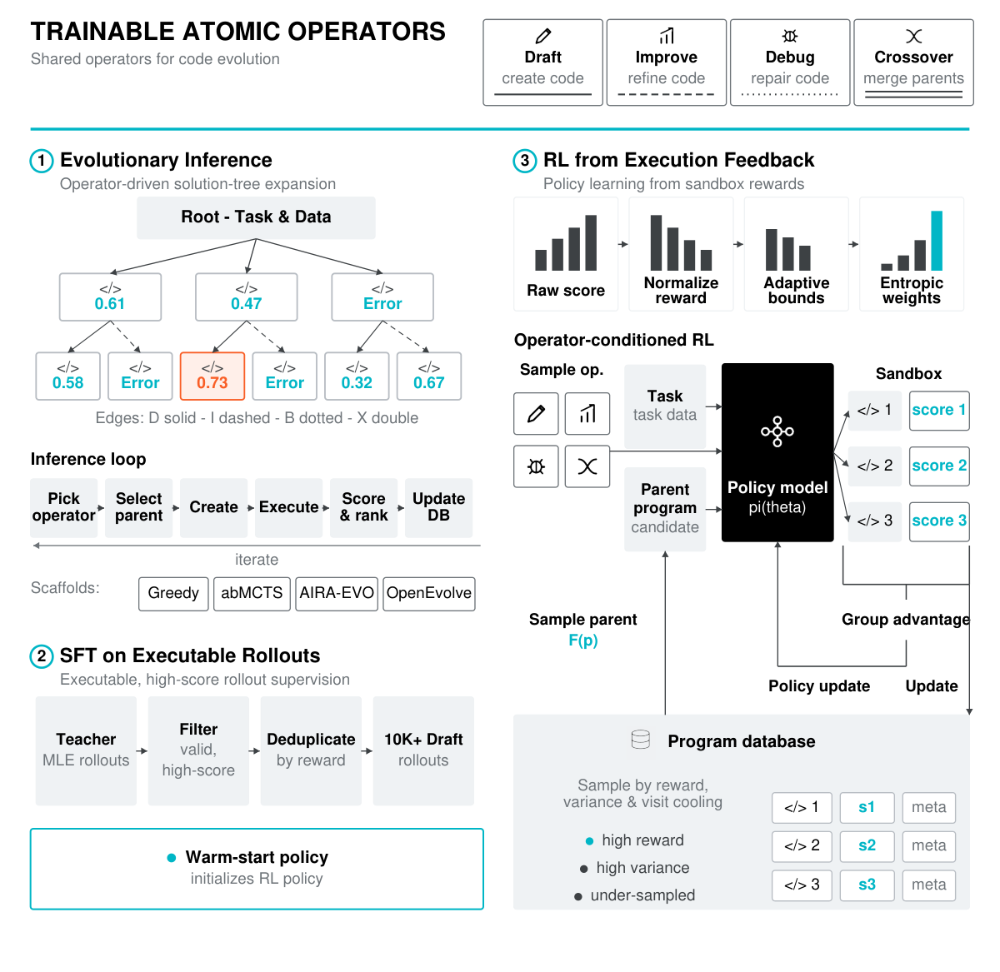
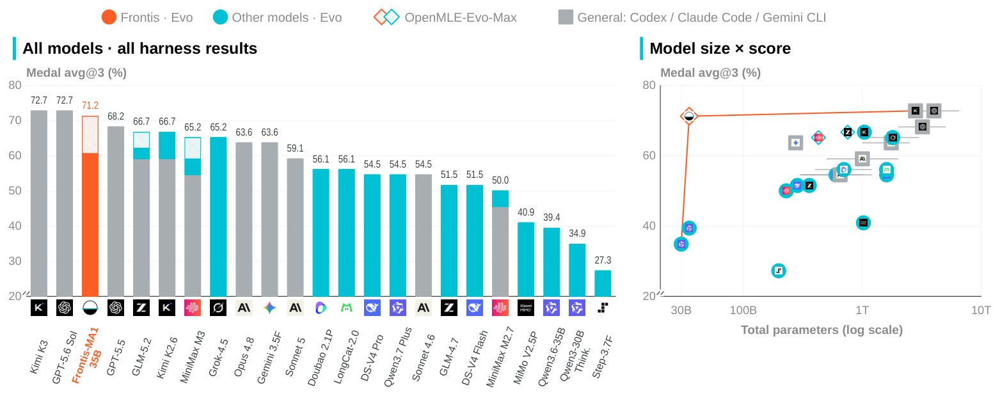

Frontis-MA1: Training an AI4AI Model toward Recursive Self-Improvement in ML Engineering (Horizon Research/Tsinghua)
TL;DR
- "Frontis-MA1: Training an AI4AI Model towards Recursive Self-Improvement in Machine Learning Engineering" (arXiv 2607.28568; Junlin Yang, Che Jiang, …, Kaiyan Zhang — Horizon Research/Frontis.AI + Tsinghua, 24 authors) releases OpenMLE, an open full stack for RSI research: 5,758 executable MLE task environments (Gym), execution-grounded SFT+RL over four atomic program-evolution operators (ERL), and an experience-driven evolutionary search harness (Evo).
- The design move: the same four operators — Draft, Improve, Debug, Crossover — are both the post-training targets and the inference-time actions, so the trained 35B model becomes the variation engine of the evolutionary harness. That's "meta-evolution": evolutionary trajectories become training data for the model that proposes future mutations.
- On MLE-Bench Lite under 12 h/task on a single 12 GB RTX 4090, Frontis-MA1-35B lifts Medal Average from 39.39% (base Qwen3.6-35B-A3B) to 60.61% with OpenMLE-Evo and 71.21% with Evo-Max — above GPT-5.5 + Codex (68.18%) and near Kimi K3 (2.8T) and GPT-5.6 Sol (both 72.73%). On held-out NatureBench Lite, swapping in the trained model raises Match-SOTA 50%→70% and swapping in the harness raises it 20%→50% — both halves of the loop transfer.
Why this matters
Most autoresearch systems in this tracker — AIDE, AIRA, MLE-STAR, the AlphaEvolve lineage — treat the LLM as a frozen proposal engine and put all the cleverness in the search scaffold. The other camp trains models on agentic traces but leaves the harness fixed. OpenMLE is one of the first open, full-stack attempts at closing the loop between the two: run evolutionary search, harvest the trajectories that actually improved executable ML solutions, train the operator model on them, and drop the better model back into the search as its mutation operator. The paper is careful with the R-word — it calls this meta-evolution, a concrete testbed toward RSI, "rather than a claim that OpenMLE realizes general, autonomous recursive self-improvement" — but the succession experiment (an upgraded model improving the very process that produces successors) is the real thing at small scale.
Two more reasons it lands squarely in this tracker's interests. First, the transfer decomposition is the cleanest I've seen of the harness-vs-model attribution question: on a held-out benchmark they swap one component at a time and show each contributes independently. Second, the whole stack is released — gym, filtered SFT corpus (26,259 examples), RL recipe, harness, weights — where prior work (ML-Agent, MLE-RL, AceGRPO) released fragments.
The core idea
Formally, an operator-conditioned generation policy proposes programs and a sandbox scores them:
where \(\tau\) is the task, \(a_t\) one of the four operators, \(c_t\) the context assembled from parent programs and execution feedback, \(\mathcal{E}\) the Docker sandbox, and \(R_\tau\) the task evaluator. Search keeps a task-local program database and returns the best-scoring program. Both training stages then optimize one unified objective — weighted likelihood of programs that execution proved good:
where \(w(s_i)\) is a quality filter for SFT and a processed-reward/advantage weight for RL. The operators are deliberately atomic: Draft proposes a fresh solution from the spec; Improve revises one parent given its (score-redacted) feedback; Debug repairs a failed or non-positive parent while preserving its core idea; Crossover synthesizes two parents ("identify the hidden synergies… a third-generation solution that transcends its predecessors").

Figure 5 from the paper: the four trainable operators (Draft/Improve/Debug/Crossover) are shared between evolutionary inference (left), SFT on executable rollouts (middle), and RL from execution feedback (right).
How it works
Gym. 5,758 quality-gated tasks (156 curated anchors, 3,362 Kaggle-dataset tasks via an extended MLE-Smith pipeline, 2,240 Kaggle-competition tasks; MLE-Bench-overlapping competitions excluded), each an isolated Docker sandbox with a task evaluator and six structured feedback modes (success, runtime error, missing code, missing submission, scoring failure, timeout).
SFT warm start. Teachers (GLM-4.7, plus Qwen3-30B for diversity) generate Draft rollouts and drive AIRA-Evo searches; only execution-validated material survives — Improve segments must beat their parent, Crossover must beat the better parent, endpoints must medal — and DeepSeek-V4-Pro filters multi-step segments for "causal inheritance" (hard-rejecting blind retries and pure scale-reduction fixes). Final corpus: 26,259 examples, heavily Draft-skewed (74%), median 8.4K–14K tokens.
RL. GSPO with TTT-Discover-style reward post-processing on the SFT checkpoint. Raw scores become base rewards via clipped min-max against task bounds,
with the bounds tightened adaptively from the task's on-policy score frontier. Group normalization is replaced by an entropic advantage,
where \(\beta\) is set per group by binary search so the induced distribution sits at a fixed KL(≈ log 2) from uniform — concentrating learning on the frontier of each group rather than z-scoring it. Parents for RL rollouts are sampled fitness-proportionally by parent reward + child-reward variance + visit cooling; asynchronous rollout/execution groups give a 1.91× step-time speedup. Reward hacking (e.g. shuffling the sample submission) is screened by an o3-mini judge before execution, at reward −0.5.
Evo (inference). An AIRA-Evo-style population loop with three redesigns: deterministic per-node experience cards plus a recomputed task-global experience board (incumbent, method-family stats, repeated errors, trends); experience-guided parent selection
softmax-sampled over normalized score, gain over parent, and method-family novelty; and operation-triggered memory synthesis — rich LLM summaries are generated lazily only for nodes the selected operator actually retrieves, then cached, instead of eagerly summarizing every node. Evo-Max adds benchmark-independent experience priors distilled from public competition artifacts (MLE-Bench sources excluded) and asynchronous multi-GPU search at unchanged sandbox budget.
# OpenMLE-Evo loop (per task, fixed sandbox budget)
DB ← ∅ # task-local program database (islands of scored nodes)
while budget remains:
a ← pick operator (Draft | Improve | Debug | Crossover)
if a == Draft: parents ← ∅
elif a == Debug: parents ← failed/non-positive node (by error signature)
else: # Improve: 1 parent; Crossover: 2, drawn sequentially
U_i ← λ_s·s̃_i + λ_Δ·Δ̃_i + λ_n/√(1+N_family(i)) # score, gain, novelty
parents ← softmax-sample(U/τ) within a sampled island
ctx ← bounded retrieval (ancestors, top siblings, experience board)
lazily synthesize+cache rich memory for retrieved nodes only
p ← g_θ(· | task, a, ctx) # trained operator model generates
s ← sandbox_execute(p) # 6 feedback modes; score or traceback
DB += experience_card(p, s, lineage, method_family, Δ_vs_parent, novelty)
recompute experience board (incumbent, family stats, repeated errors)
return best executable candidate with valid validation outcome # deterministic
Results
- MLE-Bench Lite (22 tasks, 3 runs, 12 h/task on one RTX 4090 @ 12 GB — less sandbox compute than most reported runs): base Qwen3.6-35B + Evo 39.39% ± 5.67 Medal Average → Frontis-MA1-35B + Evo 60.61% ± 7.73 → + Evo-Max 71.21% ± 8.57 (valid rate 22/22, human-rank 0.81). Replicated on a second base: Qwen3-30B-Thinking 34.85% → 53.03% → 66.67%.
- Against frontier systems (single evals): above GPT-5.5 + Codex (68.18%), Claude Opus 4.8 + Claude Code (63.64%); just below Kimi K3 + Claude Code and GPT-5.6 Sol + Codex (72.73%) — at 35B parameters, sitting far left on the paper's size-vs-score Pareto frontier.
- Harness works for other models too: GLM-5.2 goes 59.09 (Claude Code) → 62.12 (Evo) → 66.67 (Evo-Max); MiniMax M3 54.55 → 59.09 → 65.15. Vs original AIRA-Evo with the same checkpoint: 53.03% → 60.61%, with −41.7% total tokens, Improve success rate 4.73% → 9.36%, and new-best-per-million-tokens up 84.3% — the experience redesign pays for itself.
- NatureBench Lite transfer (10 held-out scientific tasks, 4 h/task): with the metric \(g=\mathrm{dir}\,(m-m_{\mathrm{SOTA}})/|m_{\mathrm{SOTA}}|\), model swap raises Match-SOTA 50%→70% (framework fixed); harness swap raises it 20%→50% (model fixed). Both components independently transfer out of distribution — though Claude Opus 4.7 + Claude Code still leads at 100% Match-SOTA.
- Mechanism studies: on leaf-classification and mlsp-2013-birds, 85–92% of validation gains come through Improve+Crossover rather than fresh Drafts — the evolutionary operators, not lucky sampling, carry the improvement.

Figure 1 from the paper: Frontis-MA1-35B + Evo-Max (orange, hatched) reaches 71.2% Medal Average, exceeding GPT-5.5 + Codex and defining the small-model end of the Pareto frontier (right panel).
How it connects
- OpenRSI: Open Research Series toward RSI — this paper is the first OpenRSI project; the GitHub release lives in that repo. The tracker entry from early August was the announcement thread; this is the substance.
- EvoHarness-RL and Training Agents Inside Their Harnesses (Microsoft) — same thesis (train the model for the harness it will run in), here taken further: the operator vocabulary is literally shared between the RL objective and the search loop.
- DarwinX and Mendel Gödel Machine — frozen-weights harness evolution; OpenMLE is the complementary axis, evolving the variation engine while keeping the harness architecture fixed. The paper's own limitation #4 concedes the harness itself is not yet an object of evolution.
- RSIBench-Data: Kimi K3 + Kimi Code Tops Model-Harness Combinations — the matched model×harness grid here (GLM-5.2, MiniMax, Kimi K2.6 under Codex/Claude Code/Evo/Evo-Max) is exactly the attribution methodology that benchmark called for.
- Survey: Long-Horizon Agents as Harness × Optimization Co-Evolution — Frontis-MA1 is the clearest published instance of the co-evolution cell: harness trajectories → model training → better harness behavior.
- The Verifier Bottleneck — MLE is the domain where verification is nearly free (run the code, read the leaderboard metric); worth remembering when extrapolating these curves to domains without executable ground truth.
Critical take
The headline comparison flatters the method a little: Frontis-MA1's numbers are means of three runs inside its own harness, while the frontier references are single evaluations inside general coding harnesses — and ±8.6 std on the Evo-Max number means the gap to GPT-5.5 + Codex (3 points) is within one standard deviation. The "exceeds GPT-5.5" claim is better read as "a 35B model plus a specialized, experience-tuned harness matches generalist frontier systems on this 22-task suite." Second, the RSI framing is honest but the loop has run exactly once: base → MA1. The interesting curve — does generation 2, trained on MA1's own search trajectories, keep climbing or collapse into its teacher's biases (74% of SFT data is Draft, from GLM-4.7) — is future work, and the paper's limitations say so plainly (the system can't yet judge which hypotheses deserve pursuit, can't modify itself, and its selection heuristic uses three hand-picked factors). Third, benchmark leakage is handled seriously (dedup against all eval benchmarks, MLE-Bench competitions excluded from the gym, Evo-Max priors filtered), but Kaggle-derived training tasks and Kaggle-derived eval tasks inevitably share technique priors — the NatureBench transfer is the more meaningful number, and there the system matches mid-frontier models rather than beating them. None of this diminishes the release: an open, reproducible, full-stack meta-evolution loop with honest attribution experiments is exactly the artifact RSI research has been missing.
If you remember three things
- Meta-evolution = one shared operator vocabulary (Draft/Improve/Debug/Crossover) serving as both the post-training target and the inference-time action space, optimizing \(\mathcal{L}_{\mathrm{evo}}\) — weighted likelihood of programs execution proved good — so the trained model becomes the harness's variation engine.
- Both halves transfer independently on held-out NatureBench Lite: model swap 50%→70% Match-SOTA, harness swap 20%→50% — the cleanest harness-vs-model attribution table in the autoresearch literature so far.
- The experience redesign (deterministic cards + lazy operation-triggered memory synthesis) cut tokens 41.7% while doubling Improve success rate vs AIRA-Evo — most of an evolutionary harness's LLM-summarization spend is wasted on nodes nothing ever retrieves.